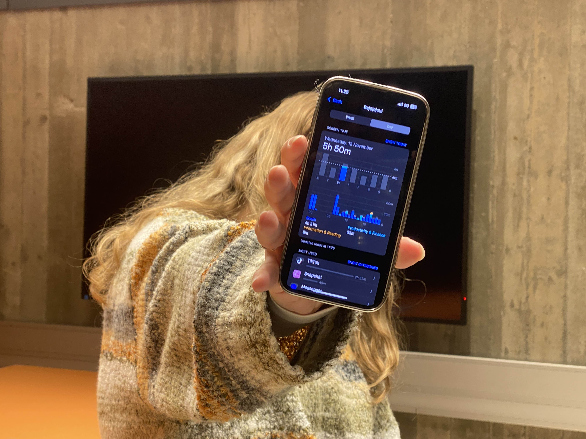
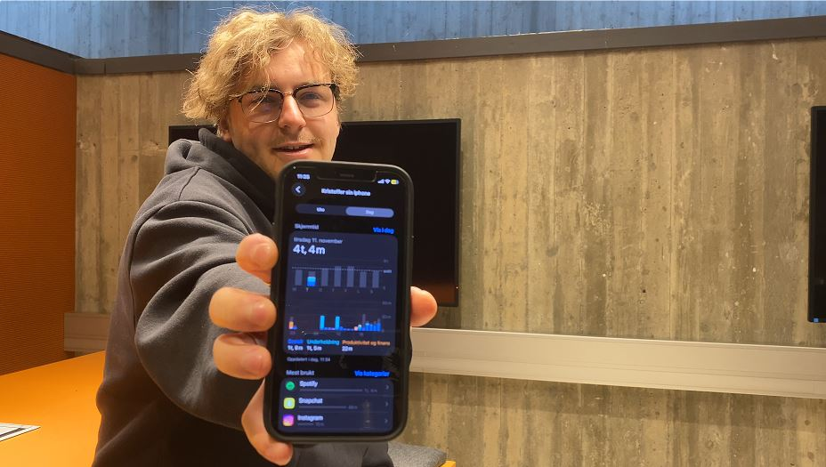
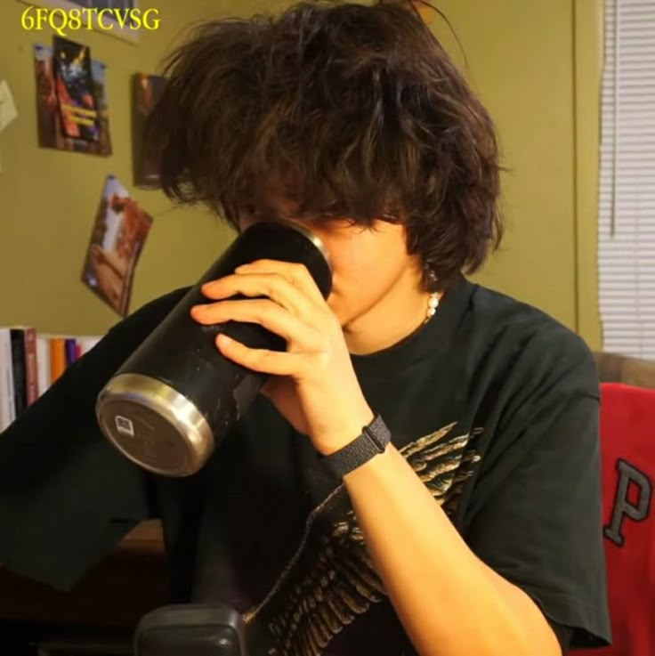
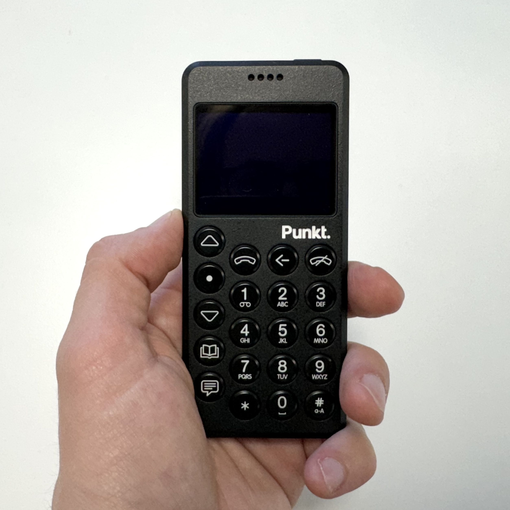

Daglig gjennomsnitt denne uken
Skjermvaner blant studenter
Intervju 1 – Sara Bejaoui
- Studieprogram og årstrinn: 3-årig utdanning i digitale medier og design (1. semester).
- Gjennomsnittlig skjermtid nå (Hver dag): Omtrent 5 timer 50 minutter totalt.
- Skjermbruk i studiet: Arbeider utelukkende på PC.
- Fritidsplattformer: Foretrekker TikTok.
- Utvikling over tid: Opplever å ha redusert skjermtiden med alderen; lå tidligere rundt 8 timer daglig.
Påvirkning på hverdag og velvære
Beskriver sporadisk utålmodighet, men få øvrige negative konsekvenser i dagliglivet.
Positive effekter
Opplever at kontinuerlig scrolling gjør det enklere å holde seg oppdatert på nyhetsbildet.
Skjermtid

Intervju 2 – Kristoffer Kristiansen
- Studieprogram og årstrinn: 3-årig utdanning i digitale medier og design, 3. studieår (1. semester).
- Gjennomsnittlig skjermtid nå: 4–5 timer per dag.
- Variasjon i bruken: Skjermtiden svinger betydelig mellom perioder.
- Fritidsplattformer: Mest bruk av TikTok.
- Negative konsekvenser: Rapporterer tydelig påvirkning på både søvn og konsentrasjon; kontinuerlig tilgang til underholdning oppleves som distraksjon.
Positive effekter
Føler seg godt oppdatert på nyheter gjennom scrolling, og opplever at formatet gir mer forklaring enn tradisjonelle kanaler.
Skjermtid

Hva kan vi lære av skjermtid?
Felles funn fra intervjuene
- TikTok dominerer fritidsbruken: Begge studentene bruker TikTok som hovedplattform i fritiden, noe som gjenspeiler den generelle trenden blant unge voksne.
- Høy daglig skjermtid: Med 4–6 timer daglig skjermtid (utenom studiearbeid) ligger begge godt over Helsedirektoratets anbefalinger.
- Bevissthet rundt negative effekter: Studentene er klar over at skjermbruken påvirker søvn, konsentrasjon og utålmodighet, men sliter med å endre vanene.
- Positive opplevelser av nyhetsoppdatering: Begge opplever at scrolling holder dem informert om aktuelle hendelser, og at formatet gir bedre forklaringer enn tradisjonelle medier.
- Forbedring over tid: Sara rapporterer redusert skjermtid sammenlignet med tidligere år, noe som tyder på at bevissthet kan føre til endring.
Hva kan vi lære?
Bevissthet er første steg
Å være klar over egne skjermvaner og deres konsekvenser er nødvendig for endring. Begge studentene viser selvinnsikt, selv om vanene fortsatt utfordrer dem.
Nytte / skade må veies
Skjermbruk gir reelle fordeler som tilgang til informasjon og sosial kontakt, men må balanseres mot negative effekter på søvn og konsentrasjon.
Målrettet bruk fremfor forbud
I stedet for å eliminere skjermtid helt, handler det om å skape bevisste rutiner og velge innhold som gir verdi fremfor passiv scrolling.
Måling gir innsikt
Verktøy som Apples Skjermtid gjør det lettere å forstå egne mønstre og kan motivere til endring når tallene blir synlige.
Unge tar grep om skjermtiden
I takt med økende bevissthet rundt skjermtidens negative effekter, ser vi en voksende bevegelse blant unge som tar radikale grep for å redusere sin digitale avhengighet.
Influensere som er for mindre skjerm og digitalisering
Youtubere som JV Scholz og Reysu har bygget store følgerskarer ved å dele sine erfaringer med redusert skjermbruk og digital minimalisme. Gjennom personlige historier og praktiske tips inspirerer de millioner av unge til å ta kontroll over sine digitale vaner.

jvscholz
Deler tips om hvordan man setter opp telefon sin slik at den fremmer produktivitet og digital minimalisme.
Reysu
Fokuserer på hvordan han fikk ned skjermtiden hans ned til 80%, og hvilke metoder han brukte for å oppnå dette.
«Dumbphones»
Hva er en «dumbphone»? En dumbphone (på norsk: «dumtelefon») er en mobiltelefon med kun grunnleggende funksjoner som samtaler og tekstmeldinger. I motsetning til smarttelefoner mangler de tilgang til sosiale medier, spill og uendelig scrolling.
Kun telefon og SMS
Lang batteritid
Ingen sosiale medier
Mindre distraksjoner

En moderne dumtelefon - Punkt MP02. Punkt ble startet av den norske gründeren Petter Neby. Bildet er hentet fra Creative Bloq
«Dumbing down» av smarttelefoner
For de som ikke er klare til å bytte helt, finnes det metoder for å «dumme ned» smarttelefonen sin:
- Slette sosiale medier-apper
- Aktivere gråskalamodus for å gjøre skjermen mindre appellerende
- Bruke appsperrer og tidsbegrensninger
- Kun beholde nødvendige apper som kart, bank og kommunikasjon
- Slå av alle varsler unntatt fra nære kontakter
Digital Minimalism av Cal Newport

Cal Newport, datavitenskap-professor og forfatter, presenterer i sin bok Digital Minimalism en filosofi for bevisst teknologibruk. Boka går gjennom hvordan man kan bruke teknologi på en mer bevisst og målrettet måte for å forbedre livskvaliteten.
Nøkkelprinsipper fra Digital Minimalism:
1
"Quality over Quantity"
Fokuser på få, nøye utvalgte digitale verktøy som gir betydelig verdi til livet ditt.
2
30-dagers digital detox
Ta en måned pause fra valgfri teknologi for å finne ut hva som virkelig betyr noe.
3
Optimalisering
Når du gjeninnfører teknologi, optimaliser hvordan du bruker den for å maksimere verdi og minimere distraksjoner.
"Digital minimalists see new technologies as tools to be used to support things they deeply value-not as sources of value themselves." - Cal Newport